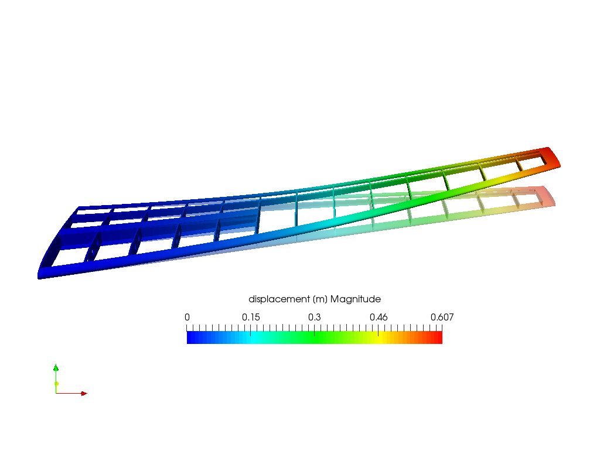

Paleontología Virtual
Día 6: Análisis Biomecánico (FEA)
2026-04-24
¿Qué es el Análisis de Elementos Finitos (FEA)?
Simulando la física de lo extinto
- El FEA es un método computacional para predecir cómo un objeto responde a fuerzas físicas (Bright 2014).
- Esfuerzo (Stress): Fuerza interna que las partículas de un material ejercen entre sí.
- Deformación (Strain): Cambio en la forma del material debido al esfuerzo.
- En Paleontología: Permite testear hipótesis sobre dieta, fuerza de mordida y resistencia mecánica de huesos fósiles.

El FEA nació en la ingeniería, llegó a los fósiles
De aviones a dinosaurios
- 1940s–1950s: Desarrollado para análisis estructural en ingeniería aeroespacial y civil.
- Turner, Clough, Martin & Topp (1956): Primera aplicación formal — análisis de esfuerzos en alas de avión.
- Clough (1960): Acuñó el término “finite elements”.
- Paleontología: Rayfield et al. (2001) — primer análisis en cráneo fósil (Allosaurus fragilis).
- Hoy: Herramienta estándar para estimar fuerza de mordida, resistencia ósea y modos de locomoción.


Cómo funciona: la analogía de la hamaca
- Resolver la física de un sólido continuo de forma exacta es matemáticamente inabordable.
- Solución: Dividir el objeto en miles de pequeños elementos simples (discretización).
- Cada elemento sigue las leyes de elasticidad de forma local.
- La suma de todos los elementos reproduce el comportamiento global del sólido.
- La malla es esa red: cuanto más fina, más fiel la simulación.

El resultado: mapas de Von Mises y Strains
- Von Mises Stress: Criterio escalar que integra todos los componentes del esfuerzo — indica si el material está cerca de fallar mecánicamente.
- Principal Strains: Dirección y magnitud de la deformación máxima y mínima.
- Mapa de color: Zonas rojas = alto esfuerzo; azules = bajo esfuerzo.
- Ley de Wolff: Los huesos tienden a ser más gruesos en las zonas de mayor esfuerzo histórico — el FEA permite verificarlo en fósiles.
- Fuerza de mordida: En un análisis estático, la fuerza de mordida puede obtenerse como la fuerza de reacción en el punto de constricción si las fuerzas musculares son aplicadas.

El Software: Fossils
Un solver abierto y eficiente
- Fossils (Chatar et al. 2023): Un protocolo de código abierto diseñado específicamente para simular cargas biomecánicas en huesos.
- Ventajas:
- Optimizado para mallas volumétricas de alta resolución (millones de tetraedros).
- Manejo directo de fuerzas musculares distribuidas.
- Basado en el motor Metafor, pero con un solver lineal estático rápido.
- El reto: La preparación de datos para FEA suele ser la parte más lenta del proceso.

Introducción a BFEX
El puente entre Blender y Fossils
- BFEX (Blender Finite Element eXporter) (Díaz de León-Muñoz, Boman, y Ferreira 2025):
- Un add-on para Blender diseñado para simplificar la creación de modelos de FEA.
- Objetivo: Automatizar la limpieza de mallas y la selección de áreas para condiciones de contorno.
- ¿Por qué Blender? Por su potente motor de manipulación de mallas y su accesibilidad.